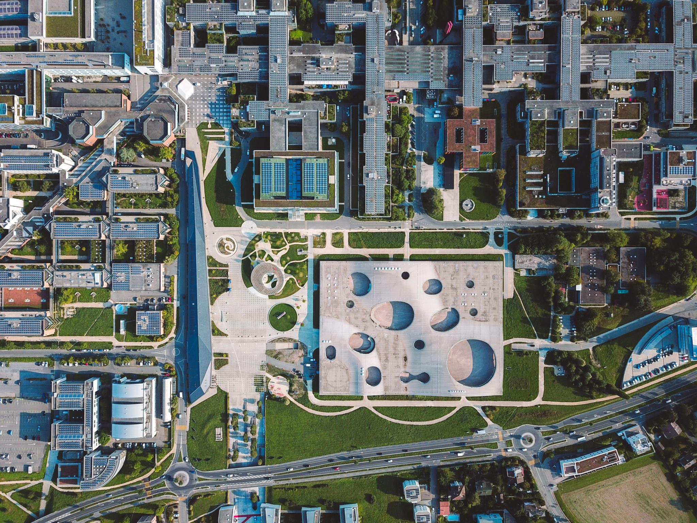
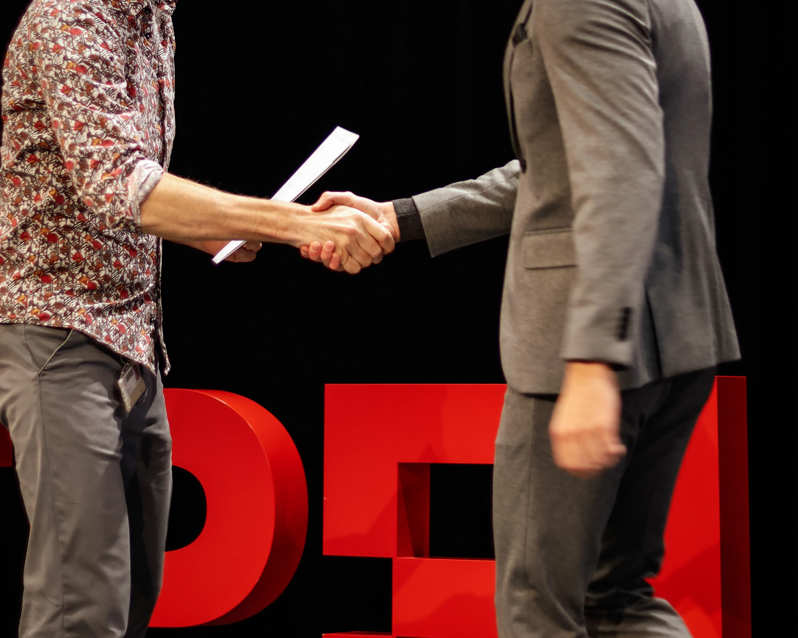

I'm a biomedical engineer
determined to bridge the gap between technological breakthroughs and their
applications in medicine.
Trained as an engineer at EPFL, Switzerland
and as a neuroscientist at Harvard Medical School,
I am driven by finding solutions to connect technology and human biology.
From non-invasive brain stimulation to organoid technologies, I have worked on a broad
spectrum of leading biomedical technologies for the study, diagnosis and treatment of neurological disorders.
My key areas of expertise lie in
neural signal processing,
machine learning for biomedical signals,
and devices for the stimulation and recording of neural activity.

I trained as a biomedical engineer at EPFL, Switzerland, where I earned my Bachelor's and Master's degrees in Life Sciences Engineering (ing. sc. viv. dipl. EPF) in 2023 and 2026. I received further training in neuroscience at the Kavli Institute for Systems Neuroscience, Norway, and as a Graduate Research Fellow at Harvard Medical School, where I specialised in translational neuroengineering.
Through my academic and professional career, I have gathered a deep understanding of the biomedical field, and have developed a broad skillset in the design, development and application of biomedical technologies, ranging from in vitro to in vivo technologies, and from basic research to clinical applications. I bring particular expertise in the field of neurotechnology, both technically and in terms of where the field currently stands.

I have been fortunate to receive several awards and scholarships throughout my academic career, which have recognised my discipline, research potential and leadership skills. Most notably, I have been awarded the Harvard-EPFL Bertarelli Fellowship in Translational Neuroengineering, the EPFL Master Excellence Fellowship, and the Swiss Study Foundation Annual Fellowship.
I largely attribute my disciplined approach to science to my 20+ years of engagement with sports and arts. I am an athlete, having competed in cycling, swimming and triathlon, and thoroughly enjoy the outdoors. I am also a classically trained pianist, and enjoy music, photography and woodworking.
My Strava